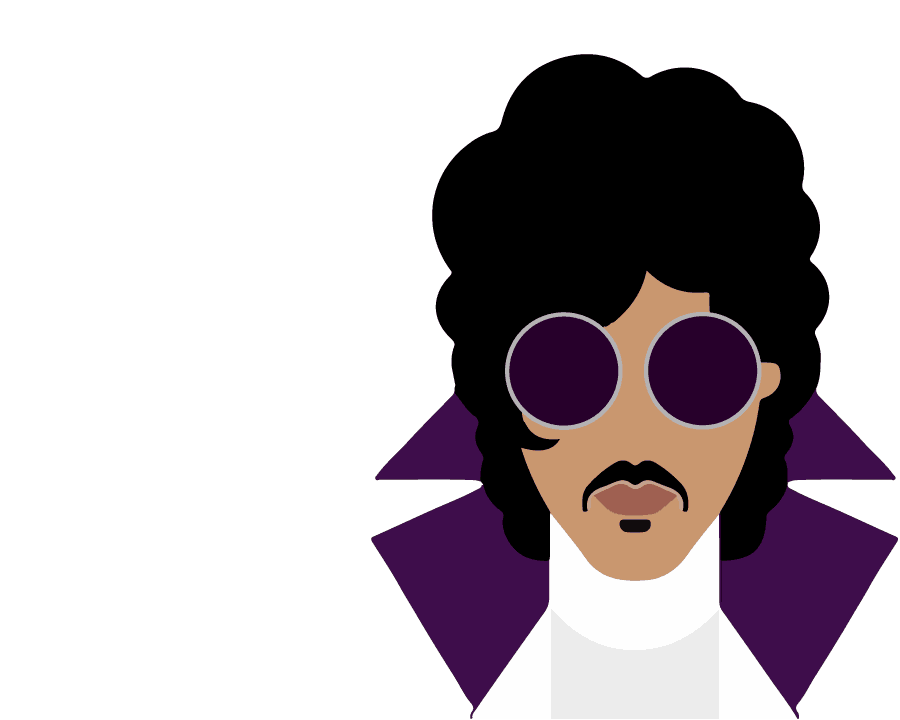
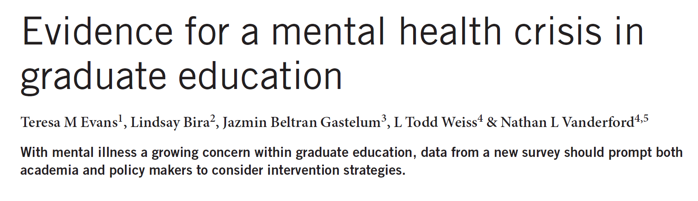
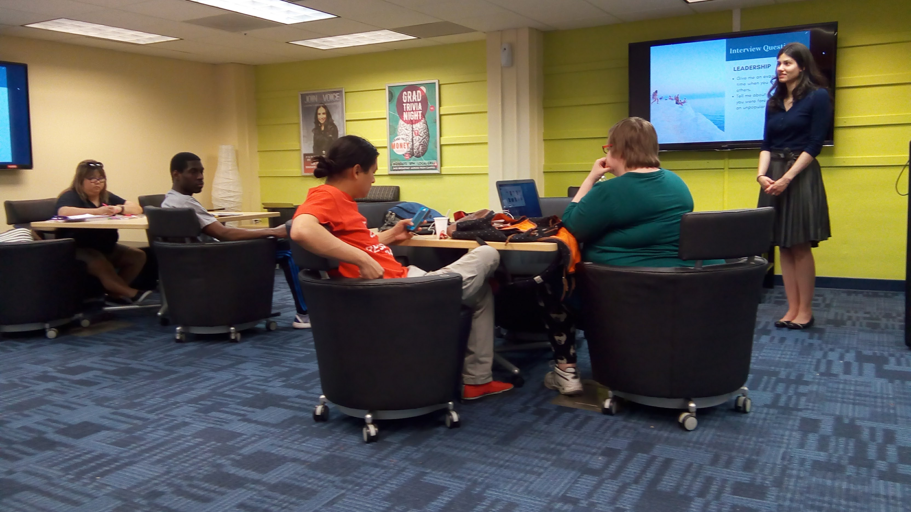
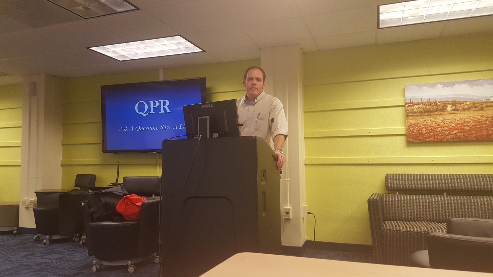
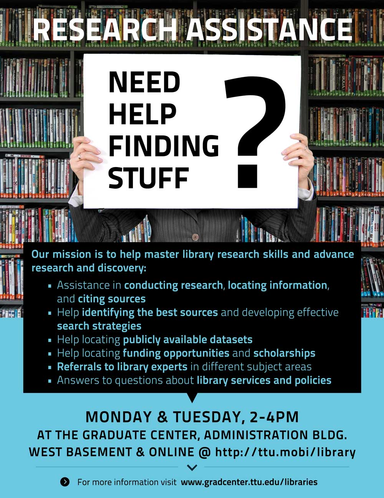
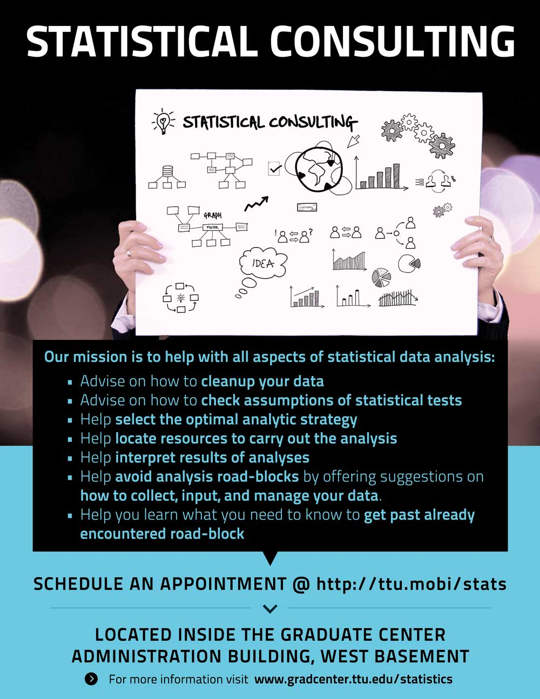
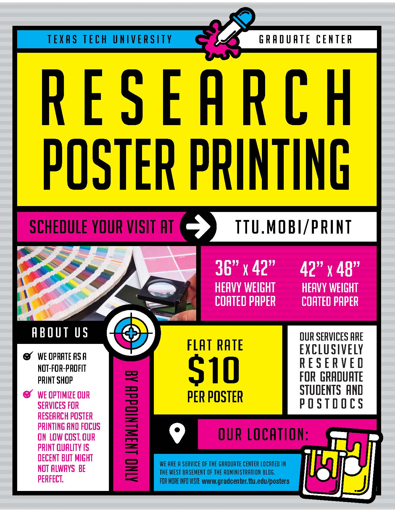

Pathways to Growing
North Carolina A&T
State University’s
Graduate Programs
High Impact Recruitment, Retention & Engagement
Jacek Jońca-Jasiński, Ph.D.
Director of Graduate Recruitment & Admissions
at Texas A&M University - Corpus Christi
Founder of the Graduate Center &
the Office of Postdoctoral Affairs
at Texas Tech University
Power of Good Questions
How will the future thinking look like?
What skills will the future demand?
How can we teach this future-oriented thinking?
How can we help develop skills that future will demand?
"All available evidence suggests that over 60% of new Ph.D.’s in science in the United States will not have careers in academic research, yet graduate training in science has followed the same basic format for almost 100 years, heavily focused on producing academic researchers. Given that so many students will not join that community, the system is failing to meet the needs of the majority of its students."
Leshner, A. I. (2015). Rethinking graduate education. Science, 349, p. 349.Party
like
it's
1999

"The American higher education system of today is like the American automobile industry of the 1970s."
"First, it offers a remarkable number of choices of the best products in the world at a reasonable cost. Second, it is not doing much about challenges that will require major adjustments if, 20 years from now, it wants to be able to make that same claim of superior choices at a reasonable cost."
Lamar Alexander, United State Senate, Committee on Health, Education, Labor and Pensions. Press release, September 9, 2013.Five Parts
Introduction
SEM
Personal Competencies
Financial Competencies
Graduate Center
Strategic enrollment management is a holistic concept and a process that enables the fulfillment of an institution's mission and its students' educational goals.
Where did we start?
<1970s disconnected functional areas
1970s & 1980s: marketing and recruitment
1990s: systems approach
2000s & onwards: systems and student experience
Shift from getting students ready for college
to getting college ready for students
Why Enrollment Management Matters?
In 2013, half of the smaller schools failed to meet enrollment goals
The inability of small colleges to increase their revenue will result in triple the number of closures in the coming years, according to a Moody's report.
Woodhouse, Kellie. "Closures to triple." Inside Higher Ed (2015).Harvard Business School's Clayton Christensen predicts that 2,000 or more colleges may close by 2029
20 private, nonprofit colleges closed from 2016–17 to 2017–18
20 public colleges closed from 2016–17 to 2017–18
While those predictions might be too pessimistic they highlight the growing competition in the higher education market.
Mission-driven and forward-looking strategic enrollment management helps institutions meet expectations of prospective and current students and continue institution's success while putting them on financially sustainable path.
Domestic Challenges
Single domestic challenge
Decline in the number of traditional college-bound students nationwide
In 2030 older people are projected to outnumber children for first time in U.S. history
Aggrevating factors
strong economy / strong labor market
shrinking state and federal funding
escalating unfunded/underfunded mandates
high cost of a traditional 4-year college education
Aggrevating factors
competition from online only programs, certificate programs, and MOOCs
increasing competition from big name brands
competition from the private education sector
International
Background & Challenges
global context
Five million globally mobile students today
Global demand projected to grow to six million by 2027
India will demand over 14 million extra tertiary education places by 2027
60%
China and India will account for 60 percent of the global growth in outbound students.
Source: British Council (2018) International Student Mobility to 2027: Local investment, global outcomes.Top 10 countries sending students abroad
| # OF STUDENTS | 2015 | 2027 | increase |
|---|---|---|---|
China |
801,000 | 1,046,000 | 245,000 |
India |
254,000 | 439,000 | 185,000 |
Pakistan |
47,000 | 79,000 | 32,000 |
Nigeria |
76,000 | 106,000 | 30,000 |
Bangladesh |
33,000 | 60,000 | 27,000 |
Saudi Arabia |
86,000 | 110,000 | 24,000 |
France |
81,000 | 101,000 | 20,000 |
Nepal |
39,000 | 59,000 | 20,000 |
Indonesia |
42,000 | 60,000 | 18,000 |
Kenya |
13,000 | 29,000 | 16,000 |
International challenges
Increasing competition from European, Australian, and more recently Asian institutions
Trade "wars"
Public perceptions and political climate
Shaky employment prospects and the immigration policy
International challenges
Growing higher education capacity in some sending countries
The emergence of important regional study destinations
Intensifying safety concerns among students
International challenges
More options for students to “study abroad” while not leaving home (e.g., MOOCs, online and distance education)
Growing private education sector
Las Vegas specific challenge: limited infrastructure to support needs of international students
Strategies
Managing risk by
diversifying the portfolio of target markets
Strategies by geography
expand recruitment and marketing in neighboring states with emphasis on southern Colorado.
expand target market to states with average in-state tuition costs exceding NMHU out-of-state
expand internationalization efforts with focus on China, India, and Latin America.
Strategies by geography
Activate alumni to serve as brand ambassadors and de-facto recruiters.
Incentivize faculty to help with recruiting efforts (e.g. during conferences and scientific meetings)
Participate in organized recruiting circuits in India
In 2015
1044 North Carolinians left to study in South Carolina.
544 Virginians came to North Carolina to study.
Source: Strayer, Nick. "The great out-of-state migration: Where students go." New York Times (2016).3962 students came to North Carolina
to attend public universities

Source: Strayer, Nick. "The great out-of-state migration: Where students go." New York Times (2016).
3310 Norh Carolinians left to study out-of-state

Source: Strayer, Nick. "The great out-of-state migration: Where students go.", New York Times (2016).
Strategies by age
the number of adult learners is projected to grow over the next decade.
grow masters pand certificate programs
develop flexible degree options and credit for prior learning or experience
develop life-long learning institute that can engage members of the community
Strategies by area of study and delivery mode
explore developing new degree and certificate programs matchin needs of the labor market trends (e.g. data science, bussiness essentials, information technology, cybersecurity, software engineering)
incentivize growing online and hybrid programs
General marketing strategies
Traditional service area: unchanged
Differentiate brand, focus on strenghts of the location: outdoors, art, affordability. Brand adventure and excitement
For cost-conscious consumers in markets such as China, India, and Africa highlight AFFORDABILITY of Highlands.
Marketing
Conversion metrics at every level will be greatly impacted by the school's brand. Familiar and desirable brands will get more ad clicks, more requests for information, and more applications. And, when final decisions are made, the school's brand will trump many other factors.
Source: Forbes
We think of the college selection process as a logical, fact-driven effort. It is not.
Choosing college is more like buying a car
As with most consumer decisions, it involved a big amount of emotional and non-conscious decision-making
Does the vehicle has to meet basic criteria (# seats, mpg, cargo space)?
Can I afford it?
How do I feel about the brand?
What will my neighbors think when I pull into my driveway?
How does driving this car make me feel?
Focus on branding that differentiates Highlands from similar institutions
Schools that don't have a unique brand will be casualties of competition. Brand helps you survive without offering the lowest price.
Strategy
Strengthen distinctive identity of Highlands University as institution offering adventure with a small classroom, quality education that won't break the bank.
Focus on adventure, hisapnic/latinx heritage, great outdoors, art, and unique culture of the region.
Going to highlands is both an adventure and a cultural experience.
Retention
Times Higher Education Student Experience Survey toppers share an emphasis on inclusiveness and partnership, plus great libraries, sports facilities and quality of clubs, societies and other extracurricular activities.
Make a college/city that students don't want to leave.
Course on learning how to learn
Provide students with clear course taking patterns that enable them to make better enrollment decisions
Help students stay on track by continuous communication, sometimes intrusive ongoing advising
Ensure that students are learning by establishing clear program outcomes (by 2nd semester you should be ...)
Mental Health Crisis Among Graduate Students
In Berkeley Well-Being survey (n = 790) rates of depression among graduate students were staggering:
47% of Ph.D. students and 37% master's students scored as being depressed.
That is one out of every two doctoral students and one out of every three master's students.
| LIFE SATISFACTION | Coef. | SE | t | P>t | Beta |
|---|---|---|---|---|---|
|
Living conditions
|
0.18 | 0.03 | 6.33 | 0.00 | 0.20 |
|
Career prospects
|
0.15 | 0.03 | 5.19 | 0.00 | 0.19 |
|
Financial confidence
|
0.10 | 0.03 | 3.99 | 0.00 | 0.14 |
|
Academics
|
0.14 | 0.04 | 3.82 | 0.00 | 0.14 |
| Overall health | 0.22 | 0.05 | 4.08 | 0.00 | 0.14 |
|
Academic Engagement
|
0.08 | 0.03 | 3.18 | 0.00 | 0.10 |
|
Valued & included
|
0.09 | 0.03 | 2.91 | 0.00 | 0.10 |
| Advisor/mentor | 0.07 | 0.02 | 2.76 | 0.01 | 0.09 |
| Social support | 0.11 | 0.04 | 2.55 | 0.01 | 0.08 |
| DEPRESSION | Coef. | SE | t | P>|t| | Beta |
|---|---|---|---|---|---|
| Sleep | -0.58 | 0.09 | -6.12 | 0.00 | -0.18 |
| Overall health | -1.17 | 0.22 | -5.44 | 0.00 | -0.18 |
| Academic engagement | -0.54 | 0.10 | -5.46 | 0.00 | -0.16 |
| Social support | -0.98 | 0.18 | -5.58 | 0.00 | -0.16 |
| Career prospects | -0.48 | 0.11 | -4.25 | 0.00 | -0.15 |
| Financial confidence | -0.27 | 0.10 | -2.78 | 0.01 | -0.10 |
| Academics | -0.32 | 0.14 | -2.27 | 0.02 | -0.08 |
| Living conditions | -0.26 | 0.11 | -2.35 | 0.02 | -0.07 |

Personal competencies for a long and productive career
Career is a MARATHON, not a sprint
Stress management
Balanced nutrition
Physical exercise
Better health = longer productive lifespan
Longer productive lifespan = higher cumulative earning potential
Personal Financial Education
-
Debt management and personal financial education
-
Long-term financial planning, retirement planning
Average cumulative student loan balance
Average cumulative graduate loans
Average combined graduate and
undergraduate loan balances
Credit Card Debt vs. Student Loan Debt
The Big Picture
FY2016 Data
- Total student loan debt: $1.5 trillion
- Total U.S. borrowers with student loan debt > 44 million
- Student loan delinquency/default > 11%
Mean retirement account savings of families by age
Median retirement account savings of families by age
Basic Cybercompetencies
-
Personal Cybersecurity
-
Data Security & Backup
-
Scripting, Programming, and Automation
-
Reproducibility & Version Control
Cybersecurity
While you can't be 100% protected from cyber threats, there are several steps you can take to mitigate their risks.
It is a what-a-mole game
You are constatly under attack, you just don't know it.
Common Attack Vectors
Phishing, social engineering, mass data breaches
Physical access to your device (e.g., PC, cell, USB)
Unpatched software or IOT
Wifi sniffing
Third party app access
Malware/Spyware
Brute force and dictionary password attacks
Social Engineering
Phishing is the fraudulent attempt to obtain sensitive information such as usernames, passwords and credit card details by disguising oneself as a trustworthy entity in an electronic communication.
Phishing emails · Voice phishing · SMS phishing · In-session phishing
Practices that mitigate social engineering threats
Be skeptical
Use https://
Don't open links/attachements from unknown sources
Carefully examine links provided in email/SMS/webpages. Scrutinize where they lead.
Practices that mitigate social engineering threats cont'd
Carefully examine domains and seccurity certificates of sensitive webpages
Be careful with the information you provide over the phone
If you were affected by a mass data breacch (e.g. Equifax) credit freezze or credit lock, credit monitoring
2FA / hardware tokens
Physical access breaches
CONTENT
Mitagate physical access threat
All users on your computer have strong passwords
Avoid common passwords
e.g. 123456789, password, qwerty, 111111, abc123
Automatic Screen Locking
Encrypt HD/Flash e.g. FileVault (Mac), BitLocker (Windows)
Unpatched software or devices
Windows/Mac/Linux/Android/iOS security updates
Unpatched firmware on IOT devices, printers, etc.
Practices that mitigate social engineering threats
Install software updates
Apply firmware patches to IOT devices (printers, IP cameras, routers, hubs)
Close common ports (e.g. FTP/SSH/Telnet) on IOT devices
Unpatched software or devices
Use of public, unencrypted, or otherwise untrusted networks exposes you to a risk that someone may be intercepting your communnications.
Practices that mitigate risk from acceessing untrusted WIFI networks
Use a VPN or SSH tunnel
Use https:// (SSL encryption)
Unpatched software or devices
We often grant permissions to third-party applications to access, read, and often even write our data.
Facebook Cambridge Analytica
Practices that mitigate risk from third party applications
Do at least annual audits of apps you have including apps/addons in cloud platforms.
Delete unused accounts in addition to uninstalling apps.
Use password manager to keep track of your accounts.
The fewer acccounts you have, the less vulnerable you are.
Malware
Keyloggers, backdoors, popup ads, injected ads, cryptocurrency mines, spam bots, DDoS bots.
Practices that mitigate malware risks
Don't open untrusted attachements
Don't open untrusted links
Don't use untrusted USB devices
Each of your devices should have an antivirus software that is automatically updating and actively scanning for malware threats.
Brute force and dictionary password attacks
Use of short passwords or common passwords makes it easier for attackers to breach them.
Password guidelines
Use a password manager (e.g. LastPass, OnePass, Dashlane) to generate, store, and audit passwords.
Use a unique passowrd for each of your accounts
Preferably password that is a random string consisting of 16+ characters
Password should include uppercase, lowercase, numbers, and where permitted special characters (e.g. $, #, !, etc.)
Change passwords at least annually. Some say every 90 days.
Use 2-factor authentication (2FA) for all sites that offer it. 2FA adds an additional layer of protection in addition to passwords.
Graduate Center
“I enjoy my work a lot. A lot of my stress comes from loneliness.” "When students don’t feel a sense of belonging within the academic community—particularly with fellow students and faculty advisors—their mental health and academic work may suffer.”
-
Nexus for graduate life, place where you feel you belong.
-
Grew from zero visits in 2013 to 32000 in 2018.
-
Grew programming from 4 to over 200 events a year.
What do we do at the Graduate Center to address needs & fears of our students?
( select examples )
Career anxiety & Career Preparation
“The largest source of anxiety for me is my job outlook.
It is tremendously uncertain and thus fear-inducing.”
-
At least one in-house hosted professional or career development event each week
-
Cross-listing of relevant professional development events hosted by our partners
-
Free LinkedIn Headshot Service


Social support
“I live on my own for the first time and it is very lonely. I wish there were more exciting ways to meet other grad students.”
-
Social events hosted at least twice a month
-
Graduate Assembly
-
Never Give Up referral service
-
Graduate groups (Dissertation writing, Walking Group, Peer Support Group, and more)
Wellness & Health Promotion
-
Wellness Day hosted twice a semester
-
Time management & stress management workshops
-
Food pantry & nutritional education
-
Registered Dietitian lead workshops
-
Mental health awareness campaign & task force
-
Student Health Services presentations

Academic & research skills help
-
Statistical Consulting Service
-
Research Assistance Service
-
Low-cost Research Poster Printing Service
-
Free Research Strategies Training Program & "Certificate"
-
Workshops



Financial Skills
-
Tax preparation help sessions
-
Workshops hosted by Personal Financial Planning program
-
Self-funded (fund-raised) Grants in Aid program
-
Referrals to Raider Red Assistance Program and Red2Black Personal Financial Couching